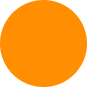

B2B Customer Support, solved.
Instant replies instead of endless search,
to answer any customer request in detail.
Instant replies instead of endless search,
to answer any customer request in detail.
Support customers across Slack, Gmail, Outlook, Microsoft Teams, and more.
Finds the facts, logs and data to answer any request. Reproduces bugs on the fly.
Your machine can handle customer questions, create tickets and propose solutions.
Collect all customer requests and ask the machine what is relevant.


